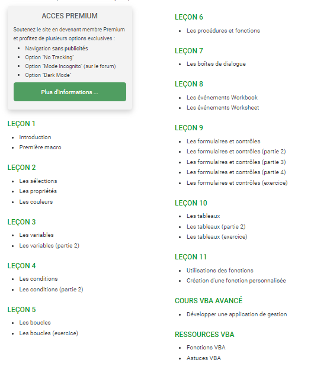

MON de Sarah
- excel
- tableur
- vba
- macro
- Sarah Honoré
Après avoir été déçue de la formation OpenClassRoom de mon MON 3-1 car elle n'abordait quasiment pas les macros VBA. J'ai choisi de faire un MON spécifiquement sur les macros dans Excel.
Recherche d'une formation
Je savais que Louise avait déjà faire une formation sur VBA dans ce MON. J'ai donc cherché une autre formation pour pouvoir comparer 2 formations sur les macros. Malheureusement, la seule que j'ai trouvé qui parcourait un large choix de sujets et qui était assez cadré est celle de Louise. Je ne vais donc pas redétailler le contenu de la formation puisque Louise l'a déjà fait.
Le sommaire de la formation
Les points positifs de la formation
Cette formation est très détaillée et on suit étape par étape la création de macros. Cette formation est faite pour les débutants, il n'y a pas besoin de connaitre le langage VBA ou même d'avoir déjà utilisé Excel. La difficulté augmente petit à petit ce qui permet de ne pas être découragé.
Il existe une formation avancée pour s'améliorer. Je n'ai pas eu le temps de suivre cette formation. Je pense y jeter un oeil quand j'aurais un peu plus pratiqué l'écriture de macros.
Les points négatifs de cette formation
Il y a peu d'exercices pour s'entrainer et il n'y a pas de support pour suivre la formation. Je trouve que cela nuit à la mémorisation car sans pratiquer on retient moins bien. Les quelques exercices existants sont sur les sujets les plus techniques qui ne sont pas forcément les plus utiles.
Mon avis sur la formation
Je pense que cette formation est très bien pour découvrir ce que sont les macros. Finalement, j'ai été surprise de voir que cela ressemble pas mal à du Python. Cependant là où il est clair que Python commence toujours à compter des éléments d'un tableau/d'une matrice/d'une liste à partir de 0, pour Excel c'est plus compliqué et j'ai l'impression que cela dépend beaucoup des fonctions. Cet aspect n'est pas très clair dans la formation. J'aurais aimé avoir plus d'exercices à réaliser pour réellement mettre en pratique et mémoriser toutes les informations. Actuellement je vois plutôt la formation comme un memo de ce qui est possible de faire avec des macros. C'est une source d'informations à laquelle je reviendrai si j'ai besoin de créer une macro un peu compliquée.
A quoi cette formation va me servir ?
Cette formation va me servir pour la finalisation du projet 3A Restos du coeur. En effet, pour ce projet nous avons utilisé des tableurs excel, au départ sans macros pour qu'ils soient presque incassables mais nous aimerions comparer les résultats obtenus avec une version avec macros.